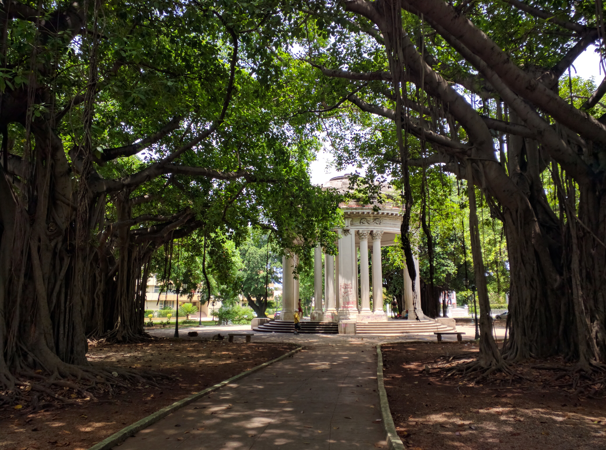
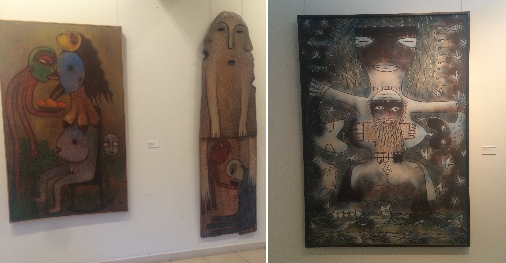
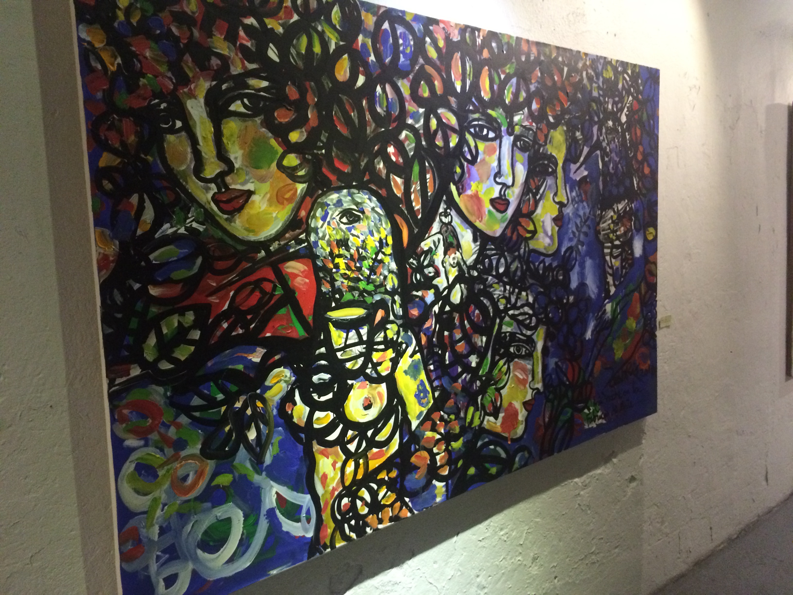

Cuban Conference Crisis¶
By Michelle Micallef¶
A year ago I could never have imagined my last night in Havana. I found myself at the hip Fábrica de Arte Cubano, sitting with a glass of Ron Santiago on the rocks, listening to Bartosz Milewski explain how to achieve determinism in a concurrent system using a data structure called lattice variables (or LVars). Previously, I was unhappily programming in Java doing Android Development for a large tech company. After leaving, I found my current position with a small company, Arena, that decided to write most of their software in OCaml. At my company I was introduced [1] to functional programming concepts and the local FP community here in New York City. When my co-worker, Rudi, discovered that there would be an FP conference, Monad Libre, in Cuba, a country still off limits to American tourists, I knew I had to go.
In the week before arriving I was furiously reading my travel book, getting a basic understanding of the island’s history. What interested me most was Cuba’s “Special Period”, which occurred after the fall of the Soviet Union. Cuba gained its independence from Spain in 1898 but was under American influence until the communist revolution led by Fidel Castro took the capital in 1959. Until 1989-91, the Cuban economy relied on imports from and exports to the Soviet Union with an oil-for-sugar program. So when the USSR collapsed, so did the Cuban economy. The country lost approximately 80% of its imports, 80% of its exports and its GDP dropped by 34% (compare this to our Great Depression where the GDP dropped by only an estimated 15%).The effects on the Cuban people were stark; poverty and hunger were rampant but Cubans resiliently figured out how to survive.
My other source for Cuban history was the wonderful (and extremely NSFW) novel, Dirty Havana Trilogy by Cuban author Pedro Juan Gutiérrez. Through a collage of short sketches, Gutiérrez portrays life in Havana during the Special Period while following the protagonist, a middle aged man also named Pedro Juan, as he hustles to make enough money to live.
These were the images in my mind as Rudi and I finally drove through Central Havana on our way to Vedado, the neighborhood where I would stay. It was nighttime but we could clearly see the decay of the buildings. Equally evident was the energy of the people as we watched the throngs on the street, many hailing a cab home.
There were the expected things I encountered during my stay: beautiful decay of buildings, the cigars and the daily summer storms. Then there was also the Fidel regime with its control and censorship that I had learned of though unsure what to expect visiting as a monied tourist. What surprised me about the country, given my American ignorance, was how incredible Cuban art is. There were gorgeous statues decorating the city streets (not to mention the hundreds of busts of Cuba’s mustachioed hero José Martí) and I was blown away in the Museo Nacional de Bellas Artes de La Habana.
On my final night, at the Fábrica de Arte FAC I was able to see art by contemporary Cuban artists.
It was also here at the FAC where I learned more about that unpleasant aspect of Cuban life: the control that government wields over its citizens. I misled you, dear reader, in my introduction about there being a functional programming conference in Havana. There was supposed to be such a conference. While Rudi and I were in the Toronto airport waiting to board our flight to Cuba, greedily downloading source code and emails from the free wifi before our coming internet blackout, we discovered that the conference had been canceled. Shocked but in total agreement that we were still definitely going to Cuba, we quickly typed an email to our boss to keep him the loop, subject line: Cuban Conference Crisis. I was able to get the full story from two of the planned speakers. Apparently the hotel where the conference was going be held called the organizer last minute and apologizing, said they could no longer host because their air conditioners were broken. Determined to find an alternate location for the event he had spent months planning for, the organizer met with several other hotels to make arrangements for them to host the conference. Each one initially accepted but then called back a few hours later to politely decline for one reason or another. The speakers speculated that it was the “government” who was behind the cancellation, though I’m queasy about using a nebulous and vague word as the government. While the control that the Fidel dictatorship has is well known, there are no definite explanations for the event cancellation. It is also important to note that the Cuban government has good reason to be suspicious of American involvement in tech events. As recently as 2010, USAID was behind an effort to create a Cuban Twitter in order to encourage “smart mobs” rebelling against the authoritarian Cuban government [2].
Despite the disappointing cancellation, I was lucky to meet Amir Chaudhry, Hannes Mehnert, Bartosz (as I mentioned) and another conference attendee who is crazy about Scala. Amir and Hannes work on a unikernel platform called MirageOS, which is implemented in OCaml. Amir and I gushed about Merlin, an editor independent auto completion and type querying tool for OCaml, though he also described the goal of the OCaml community to create better tooling as a way to encourage more developers to learn the language. Hannes told me about his badass lifestyle as a hacker academic (he works for the University of Cambridge) and how he works remotely as he travels around. For example, he recently worked in Marrakesh, Morocco for months, culminating with the first MirageOS hackathon he helped organize there.
On the flight home I shut my eyes letting my mind relive all the memories of the past week and wishing I was still on the island: the beauty and vibrant culture with that obscure undercurrent of (potentially warranted) government paranoia. Perhaps Cuban politics moves too slow for what us tech people are used to. Nevertheless, Cuba, I will be back.
Oh, and here are some old cars:
| [1] | I should say re-introduced. My introductory computer science class at Brown was taught in Scheme and OCaml but that was years ago now. |
| [2] | http://bigstory.ap.org/article/us-secretly-created-cuban-twitter-stir-unrest |